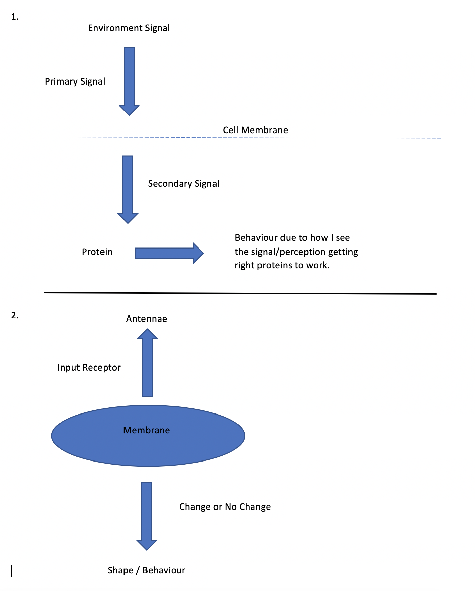
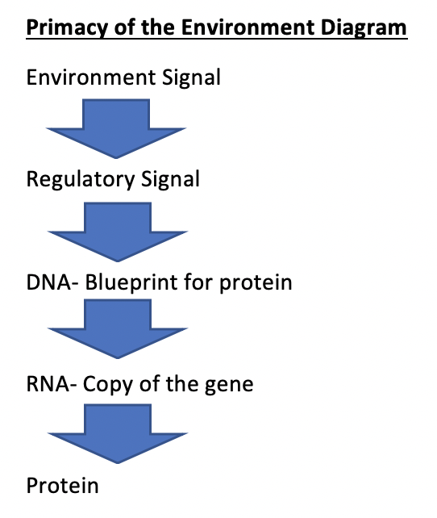
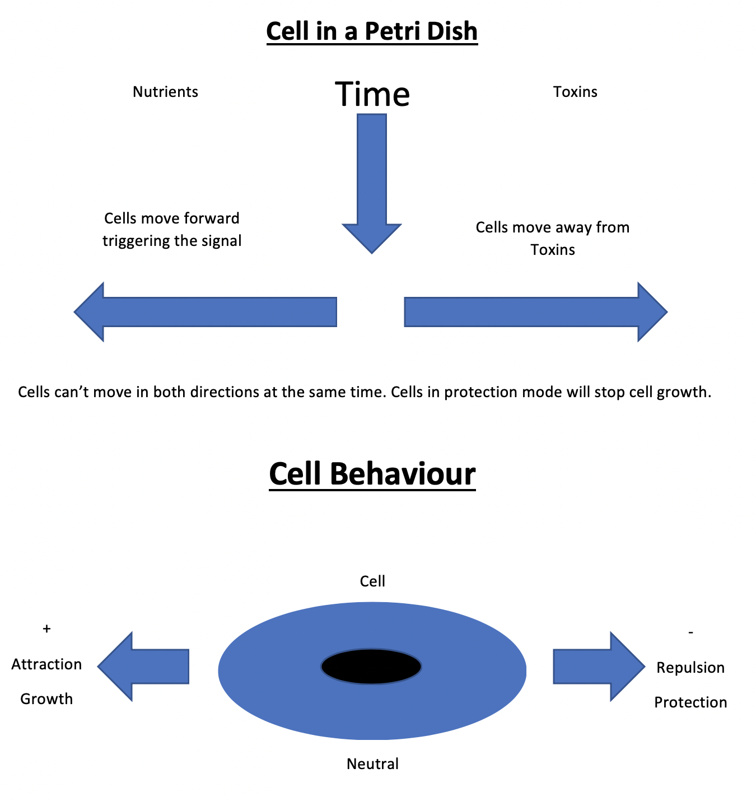
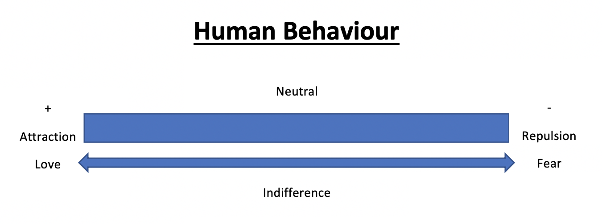

I will be discussing and exploring the amazing phenomenon of biology of belief in this article. Delving into what cells are in our body, how the cells behave in their environment, what determined their environment and how regulating the neurochemicals creates a positive environment that causes cell repair.
The cells in the body determine our overall health therefore simply put healthy cells create healthy bodies. Cells respond to the environment therefore a healthy environment nurtures a healthy predictable behaviour in the body. Cells in an unhealthy environment will become unhealthy, change will be unpredictable and result to unhealthy behaviour.
Let’s break this down and focus on the cells. A human has 50 trillion cells according to Bruce Lipton, there’s no physiologic functions in the body that’s not pre-existing in biology of a single, nucleated cell. Every cell contains same functions as our body does including digestive/ reproductive/ immune/ excretory/ respiratory/ musculoskeletal/ cardiovascular system and even brain. That’s crazy. So, humans have three brains Reptilian, Limpic and Neo Cortex interconnect and influence one another- interconnecting pathways called neural pathways. Such as limbic system to cortex. So, a person is functioning from the Reptilian Brain when in flight/fight mode. There are two branches Parasympathetic and Sympathetic connects major glands and organs and connects 50 trillion cells in our bodies. Each cell is a living entity, having a level of consciousness to complete its function. An example is using our fingers. Function starts with a thought and it has now become automatic. However, amazingly it can still be controlled by thought like breathing and this happens automatically. We can exercise conscious control over breathing such as rate and depth therefore changes, we make become integrated into Autonomic Nervous System (ANS) and no longer consciously think about it. Similar to consciously developing a habit, concentrating, practicing new habits gradually becomes part of ANS. Same applies to glands, learning to regulate chemicals released in bodies that create physiological environment. Drivers of ANS resides in mainly the brain- hypothalamus, pituitary and adrenal glands are all connected.
The physiologic functions are linked to activity of specific organs, the processes carried out in cells by miniature organ systems called organelles. Organelles are specialised structures within a living cell. Cellular life sustained by tightly regulating functions of cells physiologic systems. The expression of predictable behavioural repertoires suggests existence of cellular nervous system which reacts to environment stimuli by producing appropriate behavioural responses. Organelle coordinates and adjusts reactions of cell to its internal/external environments suggests its similar to the cells brain.
In the 1950’s there was the breaking of the genetic code, cell biologists favour concept of genetic determinism meaning that genes control biology. Therefore, cells genes contained within cells largest organelle knows as Nucleus is considered the command centre/ cellular equivalent of brain.
Genetic determinism suggests that the fate of organism is primarily predetermined within pre-existing genetic coding, this is deep rooted in biological science as a consensual truth about certain diseases etc is linked to genetic lineage and spontaneous mutations. The human mind and consciousness are encoded in molecules of the nervous system. However, there is no substantiate supporting evidence around this and it’s an unfounded assumption influenced by a Seminal Article by HF Nijhout (Bio Essays 1990,12 (9): 441-446) promotes notion that genes impact biological expression and behaviour such as cancer, alcoholism etc.
The removal of the nucleus would remove cessation of cell functions brain and result in death of the cell. However, cells can live up to two or more months without genes and respond to environment stimuli. Therefore, groundbreakingly the Nucleus cannot be the of the cell. Dr Bruce Lipton’s research into nature and behaviour of cells founded that cell behaviour rather being predetermined by genetics, actually respond to their environment. Therefore, the environment that the cells live in and respond to is made up of neurochemicals in the body.
Neurochemicals are organic molecule participates in neural activity sending messages and information transmitted around the body through electrical and chemical signals. Neurochemicals include: serotonin, dopamine, oxytocin, nitric oxide they help make up environment of cells to live in the body and carry messages to cells throughout the body that tells cells how to behave. Neurochemicals and hormones in bodies provide environment for cells to live in and balance these chemicals determine whether cells environment is healthy or not.
The Endocrine system made up of glands secrete chemicals called hormones in the blood stream. Along with the immune and nervous system the endocrine system helps body to cope with different events and stresses. Endocrine System includes the pituitary/ thyroid/ adrenal/ pancreas/ ovaries/ testes glands. From the blood stream, hormones communicate with body directing towards target cell to bring a change to the cell. But only impact on part of body if it fits. If the hormone fits the cell wall then it will work. Hormones can set off other signal pathways in cell to cause an immediate effect such as insulin.
Endocrine system is responsible for releasing chemicals and hormones in our bodies and the frequency and amount is determined by ANS. The Endocrine system is a tightly regulated system keeping hormones and their effects at the right level such as through feedback loops. Release of hormones regulated by other hormones, proteins or neuron signals then has an impact on other organs. This impact feeds back to the original signal to control further hormone release. The pituitary gland is well known for feedback loops. So, a signal is received- has an effect like glucose- sends another signal back to original message to report action and signal result to help regulate any further signals.
Bruce Lipton in his YouTube clip Biology of Belief explained that life is movement of the proteins when they move, they have jobs. Proteins change shape when a signal shows up. Movements generated by shape change create biological behaviour.
Protein – Signal – Behaviour
Therefore, the brain of the cell controls signals which controls behaviour. The membrane is the brain of the cell and nuclear has no intelligence. Cells have antennas. The Receptor is the awareness of the environment and the Effector is the physical sensation. Its powerful knowledge to know that perception is not impacted by genes or DNA but from a stimulus response. In fact, perception controls behaviour and the DNA is the blueprint for a protein. Genes do not self-activate, therefore the belief that cancer is a gene is false. Please refer to the diagrams below.

It is a conventional belief that genes are in control and can self-activate or change a protein. This is not true. The TRUTH is that “when a gene product is needed a signal from the environment, not an emergent property of the gene itself activates the expression of that gene.” H.F Nijhout 1990.
A signal from the environment activates the expression of that gene. Please refer to below diagram.

Therefore, it is really important to understand that perception controls genes. Bruce Lipton explains the following points;
• Signal shows up because protein is not there and activates appropriate genes.
• Random Mutation is a conventional belief. If a gene is not there, change the gene- perception and rewrite genes.
• Current belief is Adaptive Mutation.
We adjust our genes to fit the environment we think we live in based on our perception. It’s belief that changes your genes. We can change and adjust our genes according to the environment. Your own beliefs are activating your genes and can rewrite your genes. Therefore, perception has the power to rewrite genes.
Bruce Lipton further elaborates that our beliefs are shaped by:
Perception controls behaviour
Perception controls genes
Perception rewrites genes
Adjusting perception adjusts genes
Genes in cells are equivalent to programs in a disk like a computer. So, what type of programs are in my body? Gene programs provide for SURVIVAL.
1. Growth (reproduction) either or
2. Protection

Bruce Lipton informs in the Biology of Belief YouTube clip that the most important cell for growth is LOVE. Perceived stress impacts on the Hypothalamus, Pituitary gland, Adrenal gland, Axis triggering flight fight response supressing immunity system. When under stress it impacts our intelligence.

Bruce Lipton states that the body is like a camera, whatever the signal picked up by the lens translates into a film making a complimentary copy. Cells like a camera take a picture, create a copy, question is, is it in Growth or Survival? Our beliefs and perceptions act as a filter selecting genes not appropriate for the environment. Life has everything in it but you only see what your perception is taught by life. We can remove the filters and select healthier more growth selecting genes. KNOWLEDGE IS POWER. Therefore, you can change your belief. Challenge your beliefs. Power lies in the silence.
In conclusion to this article, when we know how to trigger ANS to operate positively in a balanced way, we achieve optimum cell health resulting in healing and peak health. It is vital to maintain balanced chemicals in the healthiest environment for our cells to live in, creates healthy cells. Healthy cells, healthy humans regardless of DNA. Consider we are cells living in an environment our cells being tiny mirrors of our physical make up living inside us as their environment therefore we are giant mirrors or our cells living together in this environment earth. Like our cells we communicate. Many cells work together in harmony and some are damaged and separated from the community. These are renegade cells and trouble makers to our health and environment. These people are their tiny mirrors (damaged cells) are responding and or reacting to their environment.
So, if a child grows up in a negative environment, abused and taught to not love themselves, they will not communicate, connect with rest of the community in a positive manner. Usually they will be self-destructive, seek needs to be met in an unhealthy way instead of constructively. Just like cells in the body living in a negative environment not getting their needs met.
When a person environment changes such as a person showing them love and appreciation, they will respond in a healthy positive manner looking for healing and to repair themselves within their community and build more positive interactions.
Our tiny little mirrors, cells do the same thing. When chemicals are out of balance- the environment is negative, they respond by being sperate and destructive.
Therefore, it is important to recognise the importance of how cells can be healed and kept healthy when we maintain a healthy environment for them to live in. Environment is also perception such as fight flight, fear, or loving. It is powerful to understand that through learning to consciously control our perceptions (belief systems) we can regulate the environment for our cells to live in and respond to.
Holistic Wellbeing Central Coast
Copyright © | All rights reserved